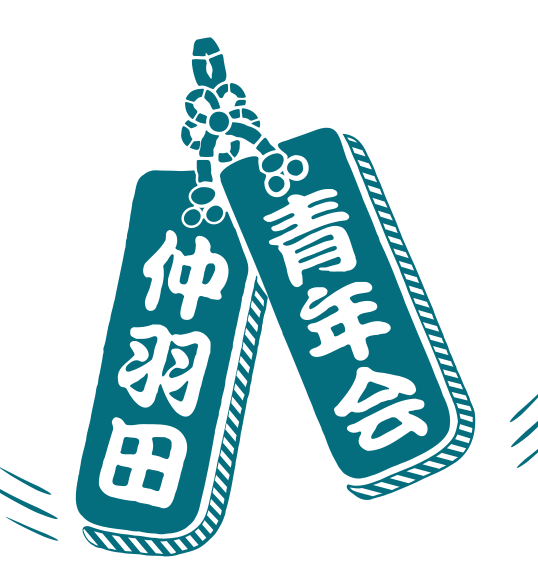
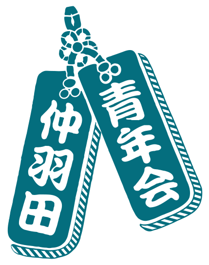
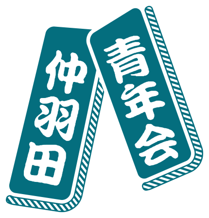
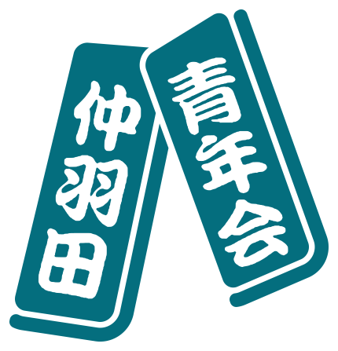

1. 札ロゴ単体（標準・採用版）
二枚の木札＋結び紐＋揺れ線（手ぬぐい地や窓枠なしの純粋ベジェ曲線）



2. 札＋結び紐のみ（揺れ線なし）
左右の揺れ線を除いた、木札と組紐だけのベジェ曲線データ



3. 札のみ・斜線影（紐・揺れ線なし）
結び紐も揺れ線もない、二枚の木札本体のみ（採用版と同じ斜線影）



4. 札のみ・ベタ影（紐・揺れ線なし）
結び紐も揺れ線もない、二枚の木札本体のみ（小サイズ印刷にも強いベタ影）
